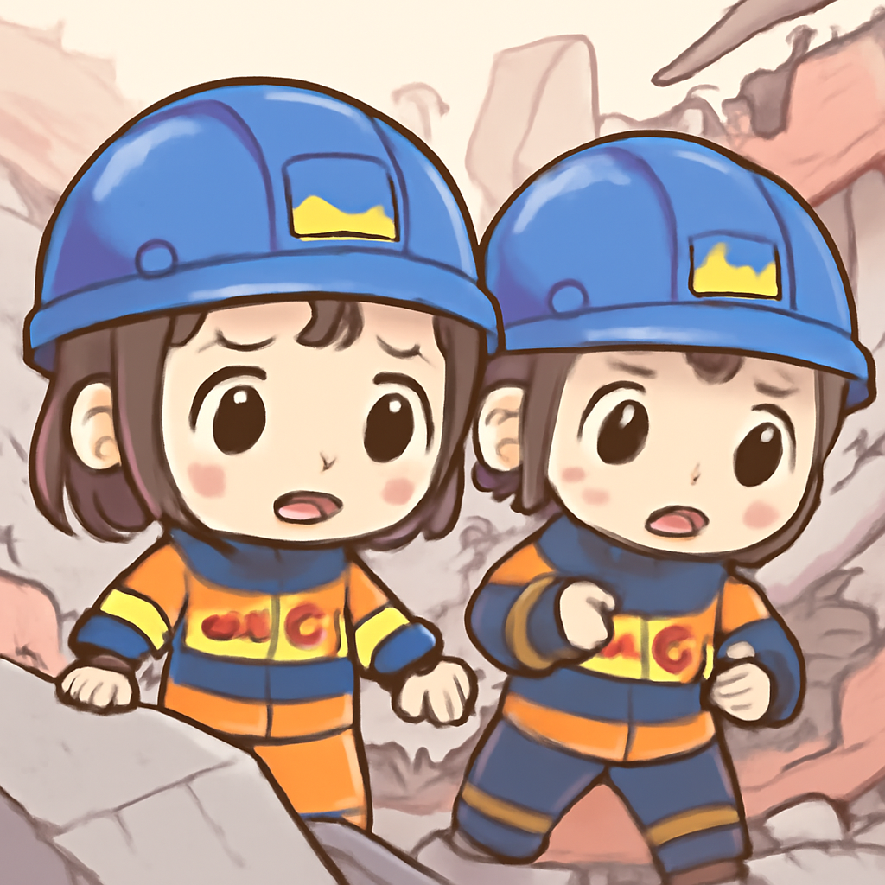

其一 · 烏克蘭基輔 · 俄羅斯空襲商場
烏克蘭基輔一商場遭空襲，造成16人死亡

在烏克蘭基輔，俄羅斯於上週五對一座商場發動空襲，造成16人死亡，130人受傷，令人痛心的是，還有四人失聯。這場攻擊被烏克蘭總統澤倫斯基譴責為「卑鄙的行為」。隨著局勢加劇，國際社會對俄方的譴責聲浪也在上升，大家都在關心下一步會如何發展。
🔗 原始新聞 ↗
2026-08-23 · 以古觀今，以笑抗愁
烏克蘭基輔一商場遭空襲，造成16人死亡

在烏克蘭基輔，俄羅斯於上週五對一座商場發動空襲，造成16人死亡，130人受傷，令人痛心的是，還有四人失聯。這場攻擊被烏克蘭總統澤倫斯基譴責為「卑鄙的行為」。隨著局勢加劇，國際社會對俄方的譴責聲浪也在上升，大家都在關心下一步會如何發展。
🔗 原始新聞 ↗
加拿大與美國的貿易談判破裂，雙方將各自實施關稅
加拿大首相卡尼宣布，因與美國的貿易談判陷入僵局，將啟動報復性關稅。這一決策可能會對兩國的經濟造成重大影響。隨著關稅的實施，大家都在思考：在這場貿易戰中，「誰才是贏家」？或許只有時間能告訴我們答案。
🔗 原始新聞 ↗
以色列在約旦河西岸重新建立定居點，引發國際抗議
在以色列約旦河西岸，數十個「開拓家庭」於近日重新入住一處關閉的定居點，這一舉動激起了國際社會的廣泛抗議。當地的巴勒斯坦居民感到擔憂，未來的局勢似乎愈發緊張。這件事情讓人思考：地區的和平究竟何時才能實現？也許在某個不遠的將來，大家會找到答案。
🔗 原始新聞 ↗
緬甸一寺廟遭空襲，導致14人喪生
在緬甸，一座寺廟於近日遭到空襲，當時正有信徒聚集進行冥想，造成14人遇難，許多平民的生活受到嚴重影響。這一事件再次凸顯了該地區持續的衝突與不穩定，讓人不禁思考：和平究竟何時才能降臨？
🔗 原始新聞 ↗
日本各城市爭取成為東京的備用首都
隨著東京經常面臨自然災害，各地城市如大阪、福岡和札幌等，紛紛展開競爭，希望成為日本的備用首都。這場「金礦競賽」不僅引發了地方政府的創意構思，也讓市民們對未來的城市規劃充滿期待。誰會成為最後的贏家呢？這場比賽才剛剛開始！
🔗 原始新聞 ↗